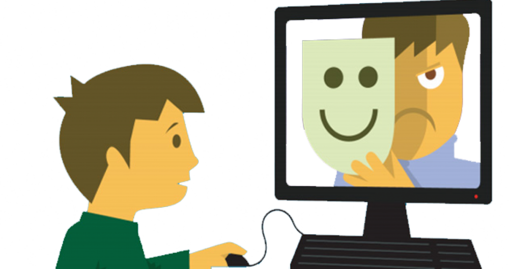

Riesgos en Internet
𝘌𝘯 𝘦𝘭 𝘤𝘢𝘴𝘰 𝘥𝘦 𝘭𝘰𝘴 𝘯𝘪ñ𝘰𝘴 𝘺 𝘢𝘥𝘰𝘭𝘦𝘴𝘤𝘦𝘯𝘵𝘦𝘴, 𝘭𝘢 𝘧𝘢𝘭𝘵𝘢 𝘥𝘦 𝘶𝘯𝘢 𝘢𝘥𝘦𝘤𝘶𝘢𝘥𝘢 𝘢𝘵𝘦𝘯𝘤𝘪ó𝘯 𝘱𝘰𝘳 𝘱𝘢𝘳𝘵𝘦 𝘥𝘦 𝘭𝘰𝘴 𝘢𝘥𝘶𝘭𝘵𝘰𝘴 𝘭𝘦𝘴 𝘥𝘦𝘫𝘢 𝘢ú𝘯 𝘮á𝘴 𝘷í𝘢 𝘭𝘪𝘣𝘳𝘦 𝘱𝘢𝘳𝘢 𝘢𝘤𝘤𝘦𝘥𝘦𝘳 𝘴𝘪𝘯 𝘤𝘰𝘯𝘵𝘳𝘰𝘭 𝘢 𝘐𝘯𝘵𝘦𝘳𝘯𝘦𝘵. 𝘚𝘪 𝘦𝘭 𝘰𝘳𝘥𝘦𝘯𝘢𝘥𝘰𝘳 𝘰 𝘭𝘢 𝘵𝘢𝘣𝘭𝘦𝘵𝘢 𝘯𝘰 𝘥𝘪𝘴𝘱𝘰𝘯𝘦 𝘥𝘦 𝘧𝘪𝘭𝘵𝘳𝘰𝘴 𝘲𝘶𝘦 𝘭𝘪𝘮𝘪𝘵𝘦𝘯 𝘦𝘭 𝘢𝘤𝘤𝘦𝘴𝘰 𝘢 𝘭𝘢𝘴 𝘱á𝘨𝘪𝘯𝘢𝘴 𝘪𝘯𝘢𝘥𝘦𝘤𝘶𝘢𝘥𝘢𝘴, 𝘥𝘦 𝘧𝘰𝘳𝘮𝘢 𝘢𝘤𝘤𝘪𝘥𝘦𝘯𝘵𝘢𝘭 𝘰 𝘣𝘶𝘴𝘤𝘢𝘯𝘥𝘰 𝘯𝘶𝘦𝘷𝘰𝘴 𝘢𝘮𝘪𝘨𝘰𝘴 𝘺 𝘦𝘴𝘵í𝘮𝘶𝘭𝘰𝘴 𝘴𝘦 𝘪𝘳á𝘯 𝘦𝘯𝘤𝘰𝘯𝘵𝘳𝘢𝘯𝘥𝘰 𝘢𝘭𝘭í 𝘤𝘰𝘯 𝘵𝘰𝘥𝘢 𝘤𝘭𝘢𝘴𝘦 𝘥𝘦 𝘤𝘰𝘯𝘵𝘦𝘯𝘪𝘥𝘰𝘴, 𝘴𝘦𝘳𝘷𝘪𝘤𝘪𝘰𝘴 𝘺 𝘱𝘦𝘳𝘴𝘰𝘯𝘢𝘴, 𝘯𝘰 𝘴𝘪𝘦𝘮𝘱𝘳𝘦 𝘧𝘪𝘢𝘣𝘭𝘦𝘴 𝘯𝘪 𝘤𝘰𝘯𝘷𝘦𝘯𝘪𝘦𝘯𝘵𝘦𝘴 𝘱𝘢𝘳𝘢 𝘵𝘰𝘥𝘢𝘴 𝘭𝘢𝘴 𝘦𝘥𝘢𝘥𝘦𝘴. 𝘠 𝘭𝘰 𝘲𝘶𝘦 𝘦𝘮𝘱𝘪𝘦𝘻𝘢 𝘱𝘰𝘳 𝘤𝘶𝘳𝘪𝘰𝘴𝘪𝘥𝘢𝘥 𝘱𝘶𝘦𝘥𝘦 𝘢𝘤𝘢𝘣𝘢𝘳 𝘦𝘯 𝘶𝘯𝘢 𝘢𝘥𝘪𝘤𝘤𝘪ó𝘯 𝘺𝘢 𝘲𝘶𝘦 𝘭𝘰𝘴 𝘯𝘪ñ𝘰𝘴 𝘺 𝘭𝘰𝘴 𝘢𝘥𝘰𝘭𝘦𝘴𝘤𝘦𝘯𝘵𝘦𝘴 𝘴𝘰𝘯 𝘧á𝘤𝘪𝘭𝘮𝘦𝘯𝘵𝘦 𝘴𝘦𝘥𝘶𝘤𝘪𝘣𝘭𝘦𝘴. 𝘗𝘰𝘳 𝘥𝘦𝘴𝘨𝘳𝘢𝘤𝘪𝘢 𝘩𝘢𝘺 𝘮𝘶𝘤𝘩𝘰𝘴 𝘢𝘥𝘶𝘭𝘵𝘰𝘴 𝘲𝘶𝘦 𝘯𝘰 𝘴𝘰𝘯 𝘤𝘰𝘯𝘴𝘤𝘪𝘦𝘯𝘵𝘦𝘴 𝘥𝘦 𝘦𝘴𝘵𝘰𝘴 𝘱𝘦𝘭𝘪𝘨𝘳𝘰𝘴, 𝘲𝘶𝘦 𝘺𝘢 𝘴𝘦 𝘥𝘢𝘣𝘢𝘯 𝘦𝘯 𝘱𝘢𝘳𝘵𝘦 𝘤𝘰𝘯 𝘭𝘢 𝘵𝘦𝘭𝘦𝘷𝘪𝘴𝘪ó𝘯 𝘺 𝘭𝘰𝘴 𝘷𝘪𝘥𝘦𝘰𝘫𝘶𝘦𝘨𝘰𝘴 𝘺 𝘲𝘶𝘦 𝘢𝘩𝘰𝘳𝘢 𝘴𝘦 𝘮𝘶𝘭𝘵𝘪𝘱𝘭𝘪𝘤𝘢𝘯 𝘦𝘯 𝘐𝘯𝘵𝘦𝘳𝘯𝘦𝘵, 𝘤𝘢𝘥𝘢 𝘷𝘦𝘻 𝘮á𝘴 𝘰𝘮𝘯𝘪𝘱𝘳𝘦𝘴𝘦𝘯𝘵𝘦 𝘺 𝘢𝘤𝘤𝘦𝘴𝘪𝘣𝘭𝘦 𝘢 𝘵𝘰𝘥𝘰𝘴 𝘦𝘯 𝘭𝘢𝘴 𝘤𝘢𝘴𝘢𝘴, 𝘦𝘴𝘤𝘶𝘦𝘭𝘢𝘴, 𝘤𝘪𝘣𝘦𝘳𝘤𝘢𝘧é𝘴, 𝘴𝘮𝘢𝘳𝘵𝘱𝘩𝘰𝘯𝘦𝘴…
Consejos de Seguridad
- Usa contraseñas seguras y cámbialas regularmente.
- No compartas información personal en redes sociales.
- Verifica la autenticidad de los sitios web antes de ingresar datos.
- Activa la autenticación en dos pasos (2FA) en tus cuentas importantes.
- Desconfía de correos electrónicos o mensajes de remitentes desconocidos.
- Evita hacer clic en enlaces sospechosos o desconocidos.
- Mantén actualizado tu sistema operativo y programas.
- Instala un buen antivirus y actualízalo regularmente.
- Utiliza conexiones seguras (HTTPS) al navegar por internet.
- No te conectes a redes Wi-Fi públicas sin usar una VPN.
- Sé selectivo con las aplicaciones y extensiones que instalas.
- Realiza copias de seguridad periódicas de tus datos importantes.
- Configura la privacidad de tus redes sociales para limitar lo que compartes.
- Lee las políticas de privacidad antes de aceptar condiciones en línea.
- Evita descargar archivos adjuntos de fuentes no confiables.
- Supervisa el contenido al que acceden los niños en internet
- Usa navegadores web que prioricen la privacidad, como Opera o Microsoft Edge.
- Desactiva la geolocalización en dispositivos y aplicaciones cuando no sea necesaria.
- No compartas contraseñas con otras personas.
- Ten cuidado con las ofertas "demasiado buenas para ser verdad" en línea.
Videos Educativos
Aquí tienes un video en el cual te puedes informar mucho más sobre la seguridad en el internet y así poder navegar de una forma más segura.

Recursos Adicionales
Explora más información sobre seguridad en internet en los siguientes enlaces: